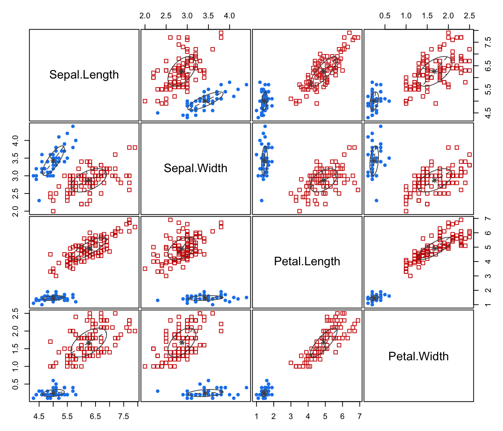
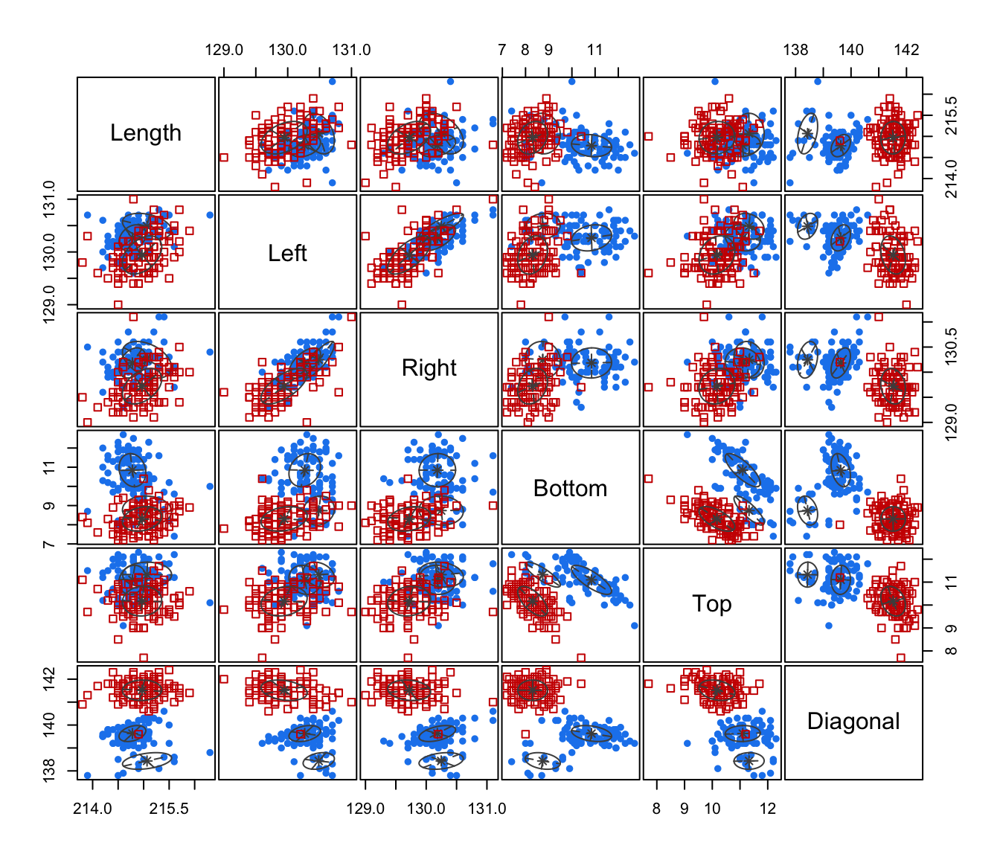
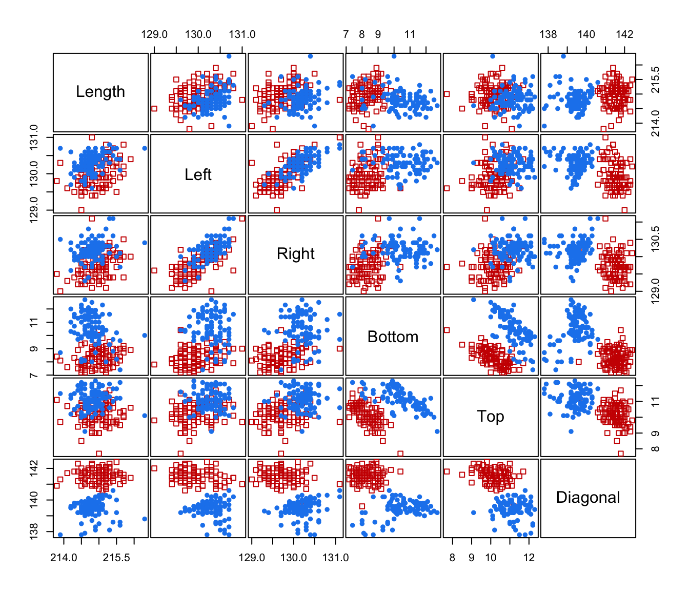
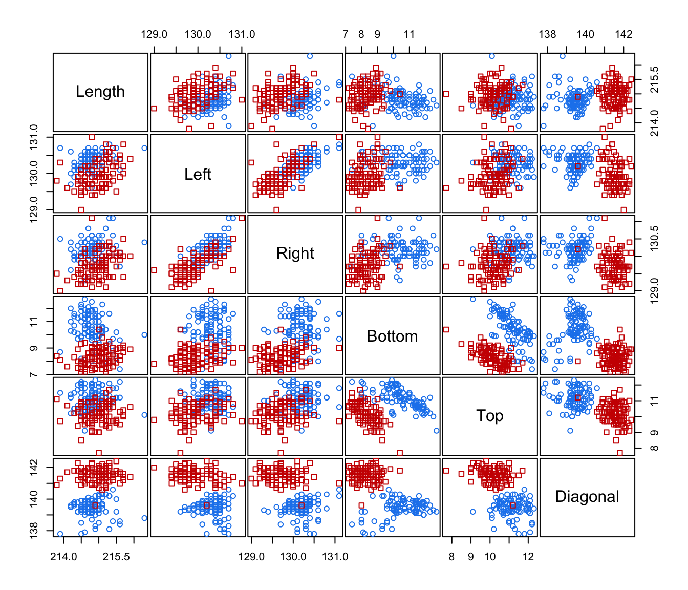
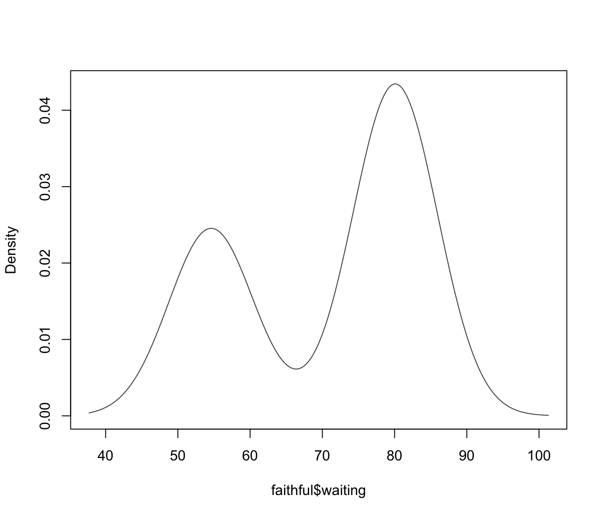

Gaussian Mixture Modelling for Model-Based Clustering, Classification, and Density Estimation
mclust-package.RdFinite Gaussian mixture modelling fitted via EM algorithm for model-based clustering, classification, and density estimation, including Bayesian regularization and dimension reduction.
Details
For a quick introduction to mclust see the vignette A quick tour of mclust.
Author
Chris Fraley, Adrian Raftery and Luca Scrucca.
Maintainer: Luca Scrucca luca.scrucca@unipg.it
References
Scrucca L., Fop M., Murphy T. B. and Raftery A. E. (2016) mclust 5: clustering, classification and density estimation using Gaussian finite mixture models, The R Journal, 8/1, pp. 289-317.
Fraley C. and Raftery A. E. (2002) Model-based clustering, discriminant analysis and density estimation, Journal of the American Statistical Association, 97/458, pp. 611-631.
Fraley C., Raftery A. E., Murphy T. B. and Scrucca L. (2012) mclust Version 4 for R: Normal Mixture Modeling for Model-Based Clustering, Classification, and Density Estimation. Technical Report No. 597, Department of Statistics, University of Washington.
Examples
#> ---------------------------------------------------- #> Gaussian finite mixture model fitted by EM algorithm #> ---------------------------------------------------- #> #> Mclust VEV (ellipsoidal, equal shape) model with 2 components: #> #> log-likelihood n df BIC ICL #> -215.726 150 26 -561.7285 -561.7289 #> #> Clustering table: #> 1 2 #> 50 100#> ------------------------------------------------ #> Gaussian finite mixture model for classification #> ------------------------------------------------ #> #> MclustDA model summary: #> #> log-likelihood n df BIC #> -646.0801 200 66 -1641.849 #> #> Classes n % Model G #> counterfeit 100 50 EVE 2 #> genuine 100 50 XXX 1 #> #> Training confusion matrix: #> Predicted #> Class counterfeit genuine #> counterfeit 100 0 #> genuine 0 100 #> Classification error = 0 #> Brier score = 0#> ------------------------------------------------------- #> Density estimation via Gaussian finite mixture modeling #> ------------------------------------------------------- #> #> Mclust E (univariate, equal variance) model with 2 components: #> #> log-likelihood n df BIC ICL #> -1034.002 272 4 -2090.427 -2099.576